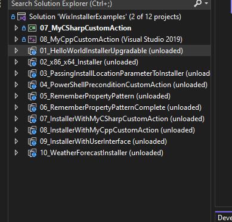
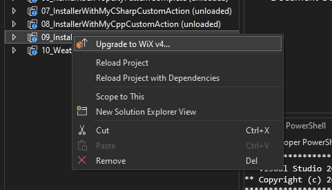
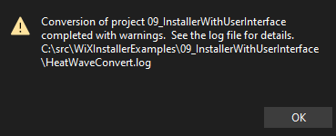
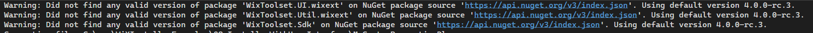

Background
Follow up on Windows installer with WiX 4 - part 1
Walkthrough
Youpee we could install one file last time. Now let’s take a leaf from the video Moving beyond Upgrades to Groups and files.
I have a bunch of files with native dynamic libraries and related:
- swift.dll
- datatypes.dll
- swift.lib
- datatypes.lib
- etc. a good dozen of these.
Let’s try to install these via the installer
Curiously not forthcoming to figure out how to add all files within a directory, even for WiX v3 documentation. There may be a wildcard option, or not. I suppose having list of files explicitely has some merit, but it is tedious to set up. Then again, the vcxproj files I use for c++ also list each files included in a project explicitly.
ComponentGroup
We are starting from the following
<Wix xmlns="http://wixtoolset.org/schemas/v4/wxs">
<Package Name="SF" Manufacturer="CSIRO" Version="0.1" UpgradeCode="2e7d7f1d-1111-1111-1111-b363c7ce3a1e">
<MajorUpgrade DowngradeErrorMessage="A newer version was detected"/>
<StandardDirectory Id="ProgramFilesFolder">
<Directory Id="InstallFolder" Name="SF">
</Directory>
</StandardDirectory>
<Feature Id="All">
<ComponentGroupRef Id="InstallComponents"/>
</Feature>
<ComponentGroup Id="InstallComponents" Directory="InstallFolder">
<Component>
<File Source="C:\local\libs\64\swift.dll"/>
</Component>
</ComponentGroup>
</Package>
</Wix>Multiple files
Let’s try:
<Wix xmlns="http://wixtoolset.org/schemas/v4/wxs">
<Package Name="SF" Manufacturer="CSIRO" Version="0.1" UpgradeCode="2e7d7f1d-1111-1111-1111-b363c7ce3a1e">
<MajorUpgrade DowngradeErrorMessage="A newer version was detected"/>
<StandardDirectory Id="ProgramFilesFolder">
<Directory Id="InstallFolder" Name="SF">
</Directory>
</StandardDirectory>
<Feature Id="All">
<ComponentGroupRef Id="InstallComponents"/>
</Feature>
<ComponentGroup Id="InstallComponents" Directory="InstallFolder">
<Component>
<File Source="C:\local\libs\64\boost_chrono-vc142-mt-gd-x64-1_79.dll"/>
<File Source="C:\local\libs\64\boost_chrono-vc142-mt-gd-x64-1_79.lib"/>
<File Source="C:\local\libs\64\boost_chrono-vc142-mt-gd-x64-1_79.pdb"/>
<!-- etc. etc. -->
<File Source="C:\local\libs\64\yaml-cpp.dll"/>
<File Source="C:\local\libs\64\yaml-cpp.lib"/>
<File Source="C:\local\libs\64\zlib.lib"/>
<File Source="C:\local\libs\64\zlib1.dll"/>
<File Source="C:\local\libs\64\zlibstatic.lib"/>
</Component>
</ComponentGroup>
</Package>
</Wix>wix build .\sf.wxs
C:\src\sffs-docs\wip\sf.wxs(16) : error WIX0367: The Component/@Guid attribute's value '*' is not valid for this component because it does not meet the criteria for having an automatically generated guid. Components with more than one file cannot use an automatically generated guid unless a versioned file is the keypath and the other files are unversioned. This component's keypath is not versioned. Create multiple components to use automatically generated guids.Very unclear about what KeyPath is about, but the first part of the error message alludes to a missing guid for the component. Guid is indeed an attribute of Components. Let’s try:
<ComponentGroup Id="InstallComponents" Directory="InstallFolder">
<Component Guid="243e7812-1111-1111-1111-745ba964291a">
<File Source="C:\local\libs\64\boost_chrono-vc142-mt-gd-x64-1_79.dll"/>wix build .\sf.wxs then works.
Let’s see with .\dojo.wsb.
The libraries are installed under “C:Files (x86)”. Can we install to another user specified folder. We need a screen that asks for a location. A side question that pops to mind will be how to handle user-level installation versus admin install, but one thing at a time.
Installing to a user specified folder
WiX 3 had something like <UIRef Id="WixUI_InstallDir" /> from what I glean, but this seems not to be valid anymore for v4. At the time I write, the new reference doc page does not yet include all information to second guess the syntax/options.
In the WiXInstallerExamples on github, there is an example that includes a UI element. Let’s try to upgrade this from Visual Studio 2022 to WiX4 and see that we get.


We get a couple of warnings, but otherwise no error.

The warnings happen to hint at the fact that the UI elements are in separate nuget packages

the wixproj file becomes:
<Project Sdk="WixToolset.Sdk/4.0.0-rc.3">
<PropertyGroup Condition=" '$(Configuration)|$(Platform)' == 'Debug|x86' ">
<DefineConstants>Debug</DefineConstants>
</PropertyGroup>
<ItemGroup>
<Content Include="InstallationStages.wxi" />
<Content Include="MyAppendScript.ps1" />
</ItemGroup>
<ItemGroup>
<PackageReference Include="WixToolset.UI.wixext" Version="4.0.0-rc.3" />
<PackageReference Include="WixToolset.Util.wixext" Version="4.0.0-rc.3" />
</ItemGroup>
</Project>and the Product.wsx file now contains:
<UI Id="MyWixUI_InstallDir">
<ui:WixUI Id="WixUI_InstallDir" />
<DialogRef Id="MyCustomPropertiesDlg" />
<Publish Dialog="InstallDirDlg" Control="Next" Event="NewDialog" Value="MyCustomPropertiesDlg" Order="4" Condition="WIXUI_DONTVALIDATEPATH OR WIXUI_INSTALLDIR_VALID="1"" />
<Publish Dialog="VerifyReadyDlg" Control="Back" Event="NewDialog" Value="MyCustomPropertiesDlg" Order="1" />
</UI>OK, a fair bit to digest and explore. This will have to do for today.
Conclusion
To be continued…